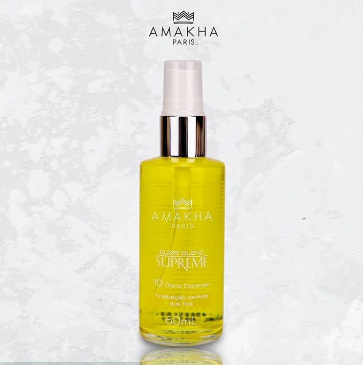

Um produto que vale ouro: Elixir Blend Supreme. Não é simplesmente um óleo , na verdade, é um composto de dez óleos essenciais, óleos “finos”. Blend significa mistura , combinação de coisas. Os grandes profissionais da beleza estão sempre explorando as possibilidades de usos de produtos de qualidade. O cabeleireiro Josh Rodriguez , além de indicar o Elixir Blend para o uso capilar como:
não para por ai, podemos também adicionar o Elixir as mascaras Magic Repair ou Mascara Hidratante Líquida, da Amakha. Procedimento é o seguinte: a cada duas colheres de mascara misturar quatro gotas do Elixir Blend. Essas gotas iram potencializar os óleos hidratantes que já estão dentro das mascaras tornado o processo de hidratação mas profundo. Esse Elixir não deixa a pele oleosa, por exemplo, se passar na barba não ficara aquele aspecto gorduroso terrível. Na verdade dará brilho a barba. Se passar nas mãos ele será absorvido. isso ocorre porque a nossa pele absorve óleos essenciais com facilidade , diferente do que ocorre com óleos vegetais puros. Blend é tão leve que pode ser usado para massagear couro cabeludo se este estiver ressecado, coçando ou com caspa e seborreia. Proceda assim : como pré-shampoo, aplique o óleo no couro cabeludo massageando depois use o shampoo. Não se esqueça que o uso principal como pré-shampoo é para umectação proceda assim:
O resultado é um brilho intenso. Dica final , utilize-o todos os dias.
